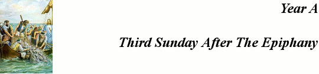

Read
the lessons at the Vanderbilt Library website:
http://divinity.lib.vanderbilt.edu/lectionary/AEpiphany/aEpiphany3.htm
Sermon Summary
|
What Scripture is the Sermon is based on? |
_______________________________ |
|
What is the main point of the Sermon? |
_______________________________ |
|
Write down any figures of speech used by the preacher (Metaphors, Similes, hyperbole) |
_______________________________ |
|
Write down any new, unusual or particularly interesting words the preacher uses |
_______________
|